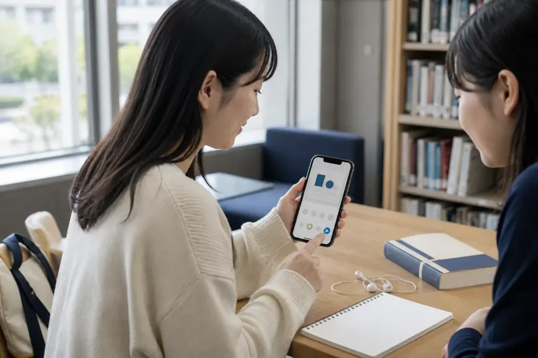
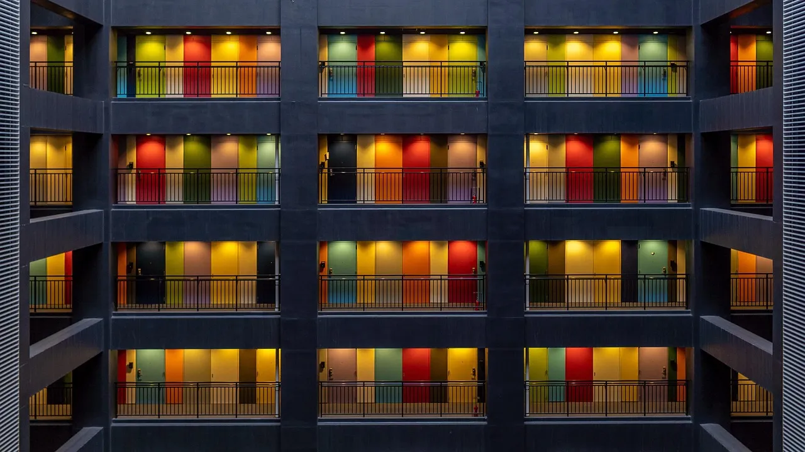

OEMパートナー向けのご案内
貴社の商材に、
LINEで返事するAIを1本。
担当者の考え方と言い回しを学んだAIが、LINEで一人ひとりに返事をします。貴社の名前で、貴社の売価で。
- 売価：貴社が決める
- 管理画面：貴社専用
- お客様の窓口：貴社
貴社のサービス名保険の相談窓口（例）
- 子どもが生まれたので、保険を見直したいです
- ご出産おめでとうございます。前回の学資のお話も合わせて、担当者と見直しましょう。いまのご契約は、いつ頃のものですか？
- 5年前です。一度会って相談したいです
- 承知しました。担当者から、面談の日程をご連絡します。
- 面談の希望 → 担当者へ引き継ぎました
ONE BY ONE
同じ文面を全員に、ではなく。
ひとりずつ、違う返事を。
よくある一斉配信
- Aさん同じ文面
- Bさん同じ文面
- Cさん同じ文面
Lシンク
- Aさん「前に相談した学資の続きを」
前回のお話の続きからですね。お子さまはいま何歳ですか？
- Bさん「更新の案内が届きました」
更新の中身は、担当者からご説明します。ご都合のよい日はありますか？
- 返事がないCさんへ
先日のご質問、まだ気になっていませんか。24時間後に再送
画面の文面はすべて例です。
BY INDUSTRY
保険も、不動産も、人材も。
業種ごとに作り替える。

学資の件、続きからお話ししますね。

ご希望の駅から近い物件を、2件ご紹介しますね。
面接は明日ですね。持ち物を一緒に確認しましょう。
写真と吹き出しは活用イメージで、実在の導入企業ではありません。業種に合わせた作り替えの中身は、後半でご説明します。
AFTER HOURS
担当者が帰ったあとも、
会話は止まらない。
- 夜、お客様から「一度、直接相談したいです」
- その場で、AIが「担当者からご連絡しますね」
- 朝、担当者には面談の希望が引き継がれている
01For partners
保険・不動産・人材に売る会社の、
もう1本の商材になります。
LINE公式アカウントを作ったあと、返事が追いつかない。一斉配信しかしていない。保険・不動産・人材のように、お客様とのやり取りが長く続く業種に商材を売っている会社なら、既存のお客様への、もう1本の提案になります。
向いている会社
- 保険代理店や、募集人を束ねる会社見直しの相談や、契約前の質問に夜でも返事ができます
- 不動産の仲介・管理会社、フランチャイズの本部物件の問い合わせに、夜や休みの日でも返事ができます
- 人材紹介・派遣の会社求職者とのやり取りを、担当者が休みの日も止めずに続けられます
- LINE公式アカウントの構築を請け負う会社作ったあとの運用を、もう1本の商材にできます
向いていない会社
- 一斉配信だけで足りる会社決めた文面を送るだけなら、LINEの配信ツールで足ります
- 専門的な判断まで、確認なしで答えさせたい会社保険の診断や法律の判断などは、担当者へつなぐ作りです
02Terms
売価は貴社が決め、
お客様の窓口も貴社が持ちます。
導入する会社から見れば、貴社のサービスです。問い合わせもクレームも、まず貴社に届きます。弊社は表に出ず、仕組みの開発と提供を引き受けます。
弊社
- 返事をするAIの開発と提供
- 貴社専用の管理画面を作る
- 業種に合わせた機能の作り替え
貴社
- 売価を決める
- 導入する会社への提案・販売
- 問い合わせ・クレームの一次受け
導入する会社
- 貴社のサービスとして使う
- 答える範囲と担当者を決める
これから決める条件
仕入値・初期費用、最低契約・解約、申込の受付と請求、障害時の対応、併売・地域の扱い、LINE公式アカウントの利用料の負担は調整中です。貴社の販売のしかたを伺ったうえで決めます。
03Difference
配信ツールは、同じ文面を送る。
Lシンクは、相手ごとに返す。
LINEの配信ツールの多くは、決めておいた文面やシナリオを条件に合わせて送る仕組みです。AIで返事をするLINEのサービスも、ほかにあります。
そのうえでOEMとしての違いは、貴社の名前と専用の管理画面で売れること、販売先の業種に合わせて作り替えられることです。配信ツールを取り次ぐ場合と比べると、次のようになります。
| 項目 | 配信ツールを取り次いで売る | LシンクのOEM |
|---|---|---|
| 返事の作り方 | 決めた文面・シナリオを送る | 相手ごとにそのつど作る |
| 売るときの名前 | 提供元のサービス名 | 貴社のサービス名 |
| 管理画面 | 提供元の画面を使う | 貴社専用に作る |
| 業種向けの会話 | 用意された型の範囲で使う | 型を起点に、販売先の業種に合わせて作り替える |
| 1社のための開発 | 提供元の標準機能の範囲で使う | 都度お見積りで対応 |
左の列は、LINEの配信ツールを販売代理として取り次ぐ場合によくある形で、特定の会社を指すものではありません。他社にも、AIで返事をするサービスや、OEM・自社ブランドでの提供に対応するサービスはあります。比べるときは、返事の作り方と、管理画面・機能の作り替えを受けるかどうかを確かめてください。
04Customize
顧客台帳から担当者への通知まで、
業種に合わせて作り替えます。
管理画面は貴社専用に作ります。そのうえで、既存の機能の一部を貴社のお客様に合わせて作り替えます。保険と不動産と人材紹介では、聞き取りたいことも、担当者へつなぐ条件も違うからです。たとえば次のようなものです。
顧客台帳を見て返事
スプレッドシートの顧客の属性や検討の状況を見て、返事の中身を変えます。
会話の要点を記録
やり取りの要点と次にやることを、お客様ごとにスプレッドシートへ残します。
空き枠や求人を反映
スプレッドシートの商品・求人・空き枠を更新すれば、返事にそのまま反映します。
要対応の人を担当者へ
条件に合ったお客様をスプレッドシートに登録し、担当者へ知らせます。
何社かで使える機能は、
最初にまとめて開発
使い回せる機能は、最初にまとめて開発し、各社に提供します。
1社のための機能は、
都度お見積りで開発
貴社のお客様だけのための開発は、そのつどお見積りします。費用と期間は、作り替える内容を伺ってからお出しします。
05Setup
導入する会社が決めるのは3つ。
ひな形、答える範囲、つなぐ条件。
AIに話させる文章を、ゼロから書く必要はありません。選ぶことと、短い書き足しだけで始められます。
業種の会話ひな形を選ぶ
保険・不動産・人材など、よくある質問と聞き取りの項目が並んだひな形から始めます。
答える範囲を決める
AIが答えてよいことと、答えずに担当者へ回すことを分けます。
つなぐ条件を決める
面談の希望など、担当者へ知らせる条件と宛先を決めます。
今後の開発候補
提供時期は未定- 流入経路ごとの挨拶の出し分け
- 販売会社ごとの申込URL
- アンケート形式の聞き取り
06FAQ
学ぶもの、答える範囲、記録。
契約前の6つにお答えします。
AIは、何を学んで返事をしますか。
登録した商品や会社の情報、顧客台帳、担当者の考え方や言い回しの例です。何を登録するかは、導入のときに一緒に決めます。
間違ったことを答えませんか。
答えない範囲をあらかじめ決め、その範囲の質問は担当者へつなぎます。専門的な判断をAIに任せない作りです。
返事がない人への再送は、止められますか。
止められます。再送の文面、待ち時間、回数は設定で決め、送らない設定にもできます。
LINE公式アカウントの費用は、誰が払いますか。
LINE公式アカウントは、導入する会社のものを使います。その利用料をどちらが負担するか、弊社へのお支払いとの分け方は調整中です。
アカウントとやり取りの記録は、誰のものですか。
LINE公式アカウントとお客様は、導入する会社のものです。解約したときの記録の渡し方と、スプレッドシートを誰が見られ誰が直せるかは調整中です。
「第0次 共同販売パートナー」とは、どう違いますか。
OEMは、貴社の名前で売っていただく形です。第0次 共同販売パートナーは、条件の異なる別の募集です。内容は共同販売パートナーの募集ページをご覧ください。どちらが合うかは、ご相談の場で一緒に決めます。
まずは、販売先の業種と
導入社数をお聞かせください。
どの業種の会社に、どれくらいの数を売る見込みか。それが分かれば、管理画面の作り方と、最初に作り替える機能の候補をお出しできます。仕入の条件も、あわせてご相談ください。
- 販売先の業種
- 想定の導入社数
- 最初に作り替えたい業務
株式会社ライトアップのお問い合わせフォームが開きます。